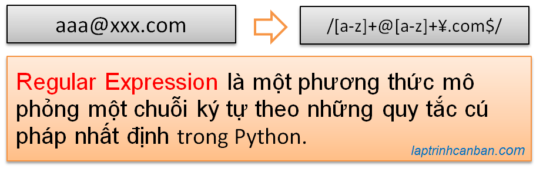

Hướng dẫn cách tách số trong chuỗi python. Bạn sẽ học được cách tìm số trong chuỗi python cũng như các phương pháp tách số trong chuỗi bằng cách sử dụng Regular Expression trong Python sau bài học này.
Chúng ta có 5 phương pháp sử dụng Regular Expression để tìm số trong chuỗi python cũng như tách số trong chuỗi python như sau:
- Hàm số re.findall() : tìm và tách số trong chuỗi python dưới dạng một list
- Hàm số re.findall() : tìm và tách dãy số trong chuỗi python dưới dạng một list
- Hàm số re.sub() : tìm và tách số trong chuỗi python dưới dạng một chuỗi
- Hàm số re.search(): tìm và tách số đầu tiên trong chuỗi python
- Hàm số re.search(): tìm và tách dãy số đầu tiên trong chuỗi python
Lại nữa, nếu bạn muốn tách ký tự trong chuỗi Python, hãy tham khảo bài viết Tách chuỗi python nhé.
Regular Expression trong Python
Regular Expression trong Python là gì
Regular Expression trong Python, hay còn gọi là biểu thức chính quy với cách viết tắt là RegEx trong python, là một phương thức mô phỏng một chuỗi ký tự theo những quy tắc cú pháp nhất định. Chúng ta thường sử dụng Regular Expression khi muốn tìm kiếm , lấy ra hoặc thay thế một chuỗi ký tự có cấu trúc chỉ định trong Python.
Đây là một kỹ thuật thường được sử dụng khi xử lý một lượng lớn văn bản trong một chương trình.

Để sử dụng regular expression trong python, chúng ta cần sử dụng tới module re bằng cách import re trong python vào chương trình.
Và nếu bạn biết cách sử dụng, bạn có thể dễ dàng tìm kiếm cũng như tách số trong chuỗi python bằng regular expression trong python.
import re trong python
Chúng ta sử dụng lệnh import để import re trong python và có thể sử dụng tất cả các hàm số và phương thức được cài sẵn của nó trong chương trình như sau:
import re |
Sau đây, chúng ta sẽ cùng tìm hiểu các cách tách số trong chuỗi bằng cách sử dụng các hàm trong regex python.
Tách số trong chuỗi python dưới dạng một list | hàm re.findall Python
Chúng ta tìm số trong chuỗi python cũng như tách từng số trong chuỗi đó và thu về kết quả dưới dạng một list bằng cách sử dụng hàm re.findall() trong module re trong python.
Cú pháp sử dụng hàm re.findall() để tách số trong python như sau:
re.findall ( r'\d' , str)
Trong đó:
re.findalldùng để gọi hàmstrlà chuỗi cần tách số ra.r'\d'là một chuỗi thô được sử dụng như mẫu RegEx trong hàm, có tác dụng biểu thị một chữ số.
Ví dụ cụ thể, chúng ta tách số trong chuỗi python dưới dạng một list như sau:
import re |
Lưu ý là chúng ta tách số ra từ chuỗi ban đầu và lấy kết quả, chứ không làm thay đổi chuỗi ban đầu nhé.
import re |
Sau khi tách các số từ chuỗi và thu về kết quả dưới dạng list, chúng ta có thể nối các phần tử trong list và chuyển kết quả về dạng chuỗi bằng cách sử dụng hàm join trong python. Ví dụ:
r = ''.join(m) |
- Xem thêm:Phương thức Join() trong Python.
Tách dãy số trong chuỗi python dưới dạng một list | hàm re.findall() Python
Ở phần trên chúng ta đã biết cách tìm số trong chuỗi python cũng như tách từng số trong chuỗi và thu về kết quả dưới dạng một list rồi. Với cách này, thì các số tồn tại trong chuỗi sẽ được coi là riêng biệt và chúng cũng sẽ được tách riêng rẽ với nhau. Ví dụ như dãy ‘2021’ sẽ được tách ra thành ‘2’,’0’,’2’,’1’.
Tuy nhiên cũng có những trường hợp mà chúng ta cần tìm cũng như tách và thu về từng dãy số trong chuỗi, ví dụ như tách năm, tháng , ngày ra khỏi chuỗi chẳng hạn. Khi đó, chúng ta cũng sử dụng hàm re.findall() python và thay thế mẫu RegEx từ r'\d' sang r'\d+' như sau.
re.findall ( r'\d+' , str)
Ví dụ cụ thể, chúng ta tách dãy số trong chuỗi python dưới dạng một list như sau:
import re |
Sau đó, chúng ta có thể truy cập phần tử trong list qua index, và thu về kết số mong muốn. Ví dụ như chúng ta lấy số ngày, tháng, năm từ list kết quả ở trên như sau:
print("Ngày",m[1]) |
Tách số trong chuỗi python dưới dạng một chuỗi | hàm re.sub() Python
Chúng ta tìm số trong chuỗi python cũng như tách số trong chuỗi đó và thu về kết quả dưới dạng một chuỗi bằng cách sử dụng hàm re.sub() trong module re trong python.
Hàm re.sub() trong Python vốn được sử dụng để tìm một chuỗi ký tự có định dạng chỉ định và thay thế chuỗi đó bằng một chuỗi khác. Ứng dụng re.sub(), chúng ta có thể tìm ra tất cả các ký tự trong chuỗi, sau đó xóa hết chúng đi. Kết quả sẽ chỉ còn chữ số sẽ ở lại, qua đó chúng ta có thể tách số trong chuỗi python.
Cú pháp sử dụng hàm re.sub() để tách số trong python như sau:
re.sub ( r'\D' , '', str)
Trong đó:
re.subdùng để gọi hàmstrlà chuỗi cần tách số ra.r'\D'là một chuỗi thô được sử dụng như mẫu RegEx trong hàm, có tác dụng biểu thị một ký tự.- Ký tự trắng
''dùng để thay thế các ký tự tồn tại trong chuỗistr
Ví dụ cụ thể, chúng ta tách số trong chuỗi python dưới dạng một chuỗi như sau:
import re |
Lưu ý là chúng ta tách số ra từ chuỗi ban đầu và lấy kết quả, chứ không làm thay đổi chuỗi ban đầu nhé.
import re |
Tách số đầu tiên trong chuỗi python | hàm re.search() python
Chúng ta tìm và tách số đầu tiên xuất hiện trong chuỗi python bằng cách sử dụng hàm re.search() trong module re trong python.
Hàm re.search() trong Python vốn được sử dụng để tìm một chuỗi ký tự có định dạng chỉ định và trả về kết quả khớp đầu tiên. Ứng dụng re.search(), chúng ta có thể tìm và tách ra số đầu tiên trong chuỗi python.
Cú pháp sử dụng hàm re.search() để tách số trong python như sau:
re.search ( r'\d' , str)
Trong đó:
re.searchdùng để gọi hàmstrlà chuỗi cần tách số ra.r'\d'là một chuỗi thô được sử dụng như mẫu RegEx trong hàm, có tác dụng biểu thị một chữ số.
Lưu ý là kết quả của Hàm re.search() trong Python không phải là chuỗi kết quả mà là một match object chứa chuỗi đó. Để lấy ra chuỗi kết quả ra từ trong match object, chúng ta sẽ cần sử dụng thêm phương thức group() trong Python.
Ví dụ cụ thể, chúng ta tách số đầu tiên trong chuỗi python như sau:
import re |
Tách dãy số đầu tiên xuất hiện trong chuỗi python | hàm re.search() python
Tương tự như với cách tách số đầu tiên xuất hiện trong chuỗi, chúng ta cũng sử dụng hàm re.search() để tìm và tách dãy số đầu tiên xuất hiện trong chuỗi python. Khi đó, chúng ta thay thế mẫu RegEx sử dụng trong hàm re.search() từ r'\d' sang r'\d+' như sau.
re.search ( r'\d+' , str)
Lưu ý là kết quả của Hàm re.search() trong Python không phải là chuỗi kết quả mà là một match object chứa chuỗi đó. Để lấy ra chuỗi kết quả ra từ trong match object, chúng ta sẽ cần sử dụng thêm phương thức như start(), end(), span(), group() trong Python.
Ví dụ cụ thể, chúng ta tách dãy số đầu tiên trong chuỗi python như sau:
import re |
Sau đó, chúng ta có thể lấy vị trí bắt đầu và kết thúc của dãy số trong chuỗi bằng cách dùng phương thức start() và end() như sau:
#Lấy vị trí xuất hiện của dãy số |
Tổng kết
Trên đây Kiyoshi đã hướng dẫn bạn về các cách tìm số trong chuỗi cũng như là cách tách số trong chuỗi python rồi. Để nắm rõ nội dung bài học hơn, bạn hãy thực hành viết lại các ví dụ của ngày hôm nay nhé.
Và hãy cùng tìm hiểu những kiến thức sâu hơn về python trong các bài học tiếp theo.
HOME>> python cơ bản - lập trình python cho người mới bắt đầu>>09. chuỗi trong python